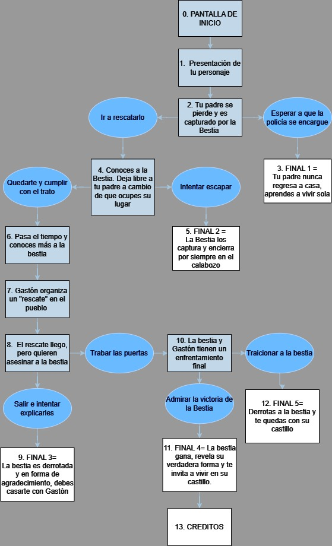
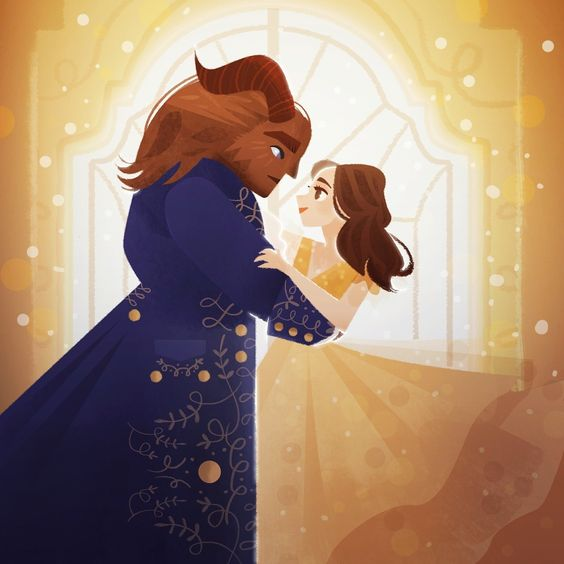

Nuestro equipo:
Nuestro equipo de trabajo estuvo conformado de 2 integrantes: Zoe Ullua y Pilar Griffo, estudiantes de Tecno1 de la comisión 3.
Nuestro equipo de trabajo estuvo conformado de 2 integrantes: Zoe Ullua y Pilar Griffo, estudiantes de Tecno1 de la comisión 3.
Nuestra aventura gráfica (+ minijuego) está basada en el clásico cuento fránces de la Bella y la Bestia, la cual cuenta de diferentes versiones, pero en este trabajo nos basamos centralmente en la establecida por la película de Disney de 1991, la versión más famosa del cuento.
La historia comienza con Bella, una joven que vive en un pequeño pueblo y sueña con aventuras más allá de su vida cotidiana. Su padre, Maurice, se pierde en el bosque y termina prisionero en un castillo encantado. Este castillo pertenece a una Bestia, un príncipe maldecido por una hechicera debido a su arrogancia. Bella encuentra a su padre en el castillo y se ofrece a quedarse en su lugar. A pesar de su miedo inicial, Bella descubre que la Bestia es menos aterradora de lo que parece. A lo largo del tiempo, empiezan a desarrollar una conexión especial. El personal encantado del castillo, que incluye objetos animados como Lumière y la Sra. Potts, también ayuda a unirlos. Sin embargo, la Bestia tiene una rosa encantada y debe aprender a amar y ser amado antes de que todos los pétalos caigan, o permanecerá como una bestia para siempre. Mientras tanto, Gastón, un cazador del pueblo que busca la mano de Bella, se entera de la existencia de la Bestia y organiza una turba para atacar el castillo. Bella regresa al pueblo para advertirles, pero la gente no la cree. La turba liderada por Gastón llega al castillo, y hay una batalla épica. Gastón apuñala a la Bestia, pero Bella lo salva al decirle que lo ama. Esto rompe el hechizo y transforma a la Bestia de nuevo en un príncipe. La película concluye con la restauración del castillo y sus habitantes a su forma humana. Bella y el príncipe celebran su amor, y la película resalta el mensaje de que la verdadera belleza está en el interior.Para este trabajo final usamos los trabajos prácticos 3 y 5 de este año de Tecno1. El TP3 siendo la aventura gráfica y el TP5 siendo el minijuego creado en el TP4 adaptado a POO.
Como primer paso de la aventura gráfica, se utilizó un diagrama, donde se muestran todos los caminos y posibles finales.
Sin embargo, la aventura gráfica original mostrada en el diagrama debió ser modificada para poder combinar y tener más sentido con el minijuego, por lo que algunos textos (como la decisión "trabar las puertas", la cual ya no existe) se verán distintos de la versión anterior. Una de las preguntas que nos llevó a esto fue plantearnos ¿en qué parte de la historia ubicar el minijuego? ¿hacerla una más de las pantallas principales? ¿hacerla un resultado de una decisión? Y si es así, ¿cómo hacerla encajar?. Lo cual no sería posible sin algunas modificaciones.
El minijuego está visiblemente basado e inspirado en el mítico juego Frogger de Atari, del cual remplazamos la rana con el personaje de Bella y los autos con Lefou. El proceso del minijuego y su implementación en la historia nos llevó a más complicaciones, relacionadas más bien con su coordinación de pantallas y estados posibles.
